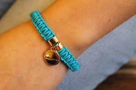

Pulseiras Artesanais
As pulseiras artesanais são feitas com materiais de alta qualidade, como miçangas, pedras naturais e cordões personalizados. Cada peça é única, ideal para presentear ou completar o seu visual.
As pulseiras artesanais são feitas com materiais de alta qualidade, como miçangas, pedras naturais e cordões personalizados. Cada peça é única, ideal para presentear ou completar o seu visual.